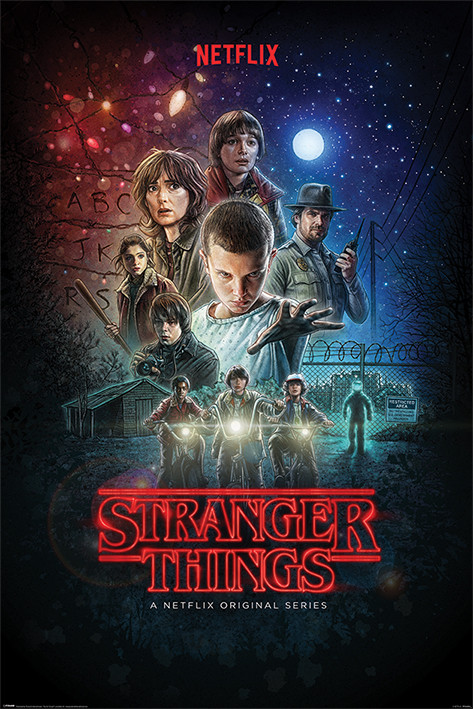

A sorozat első évadának főbb szerepeiben Winona Ryder, David Harbour, Finn Wolfhard, Millie Bobby Brown, Gaten Matarazzo, Caleb McLaughlin, Natalia Dyer, Charlie Heaton, Cara Buono és Matthew Modine, látható, valamint Noah Schnapp és Joe Keery a visszatérő szerepekben. A második évadra Schnapp és Keery már főszereplőként jelennek meg, ebben az évadban a szereplőgárda Sadie Sink, Dacre Montgomery, Sean Astin és Paul Reiser által alakított karakterekkel bővült, Priah Ferguson pedig visszatérőként jelenik meg. A harmadik évadban Maya Hawke csatlakozott a főszereplőkhöz, Ferguson pedig főszereplővé avanzsált. A saját készítésű szériát a Netflix mutatta be 2016. július 15-én, az első évad mind a nyolc részét elérhetővé téve. A sorozat második évada 2017. október 27-én jelent meg.[1] Magyar szinkronnal 2019. július 26-án mutatta be a Netflix. 